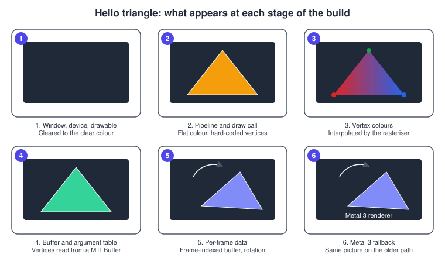
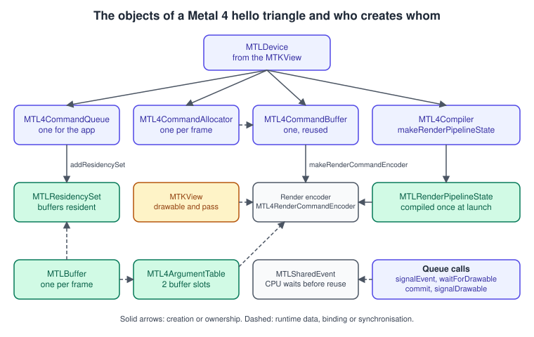
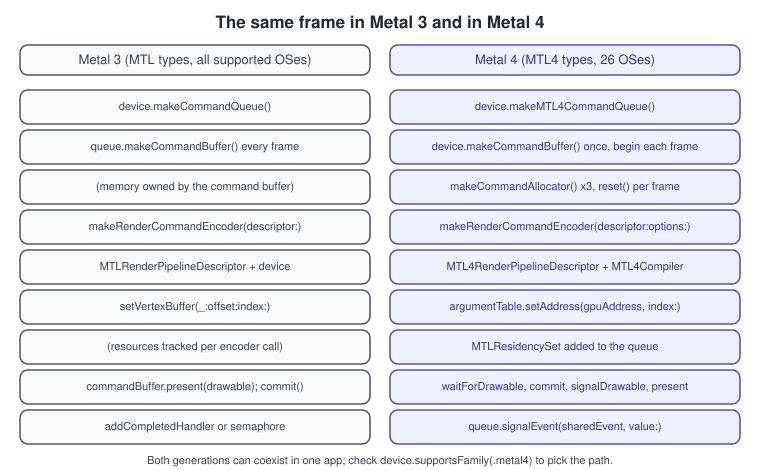

Hello Triangle with Metal 4
|
This content was generated with the assistance of AI and should be verified against the official documentation before being relied on in production. |
Drawing a triangle with Metal is more work than printing a line of text for a reason: nothing is drawn by default and almost nothing is implicit. You create the objects that talk to the GPU, describe the pipeline that turns vertices into pixels, record commands into a buffer, submit that buffer to a queue and tell the display when the result may be shown. Metal 4, introduced at WWDC25 for the 26 operating systems, keeps that shape but changes how each step is done: command buffers are reusable, their memory comes from allocators that you recycle per frame, resources are bound through argument tables and made resident through residency sets, and pipelines are compiled by an explicit compiler object. This page builds the same triangle twice, once with the Metal 4 types and once with the Metal 3 types, so you can see exactly what moved.
The facts were checked in November 2026. The versions documented are the Metal 4 core API (types prefixed MTL4, available from
iOS, iPadOS, macOS, tvOS and visionOS 26.0) and, for the fallback path, the Metal 3 API that every Metal-capable device still
supports. The Metal Shading Language is used at its 4.x level; MSL 4.1 and Xcode 27 belong to the 27 operating systems, and nothing
on this page depends on a feature newer than MSL 4.0. Metal 4 needs an A14 Bionic or later (iPhone, iPad, Apple TV), a Mac with
Apple silicon (M1 or later) or Apple Vision Pro; the code is Swift 6 and was written against the 26 SDKs. The Xcode setup, including
the Metal Toolchain component, is covered in Setting Up Xcode and a Metal Project.
This is step 1 of the Metal Bookshelf running example: a multiplatform SwiftUI app that hosts an MTKView, takes the Metal 4 path
when the device supports it and falls back to Metal 3 otherwise, and later gains a visionOS target. The triangle grows into a textured
book, then the shelf, and so on. The concepts behind the stages are in The Rendering Pipeline
and the reason Metal asks for so much explicit work is in Explicit vs Implicit APIs.
What is new in the API as a whole is in What Is New in Metal 4.
What you will see

The finished app shows a triangle with a red, a green and a blue corner that slowly rotates. The vertices are computed on the CPU every frame and written into a buffer, so the example exercises the part of a Metal renderer that matters most: data that changes per frame while the GPU is still reading the previous frame’s data.
The objects of a Metal 4 frame

| Object | What it is | Notes and options |
|---|---|---|
|
One GPU. On Apple silicon it is the only GPU and shares memory with the CPU. |
Take it from |
|
The queue you submit command buffers to. Created with |
Submitting happens through |
|
Memory in which commands are recorded. Created with |
One per frame in flight. |
|
A list of commands. Created once with |
Reusable: call |
|
Attachments, load and store actions for one render pass. |
|
|
Records the draw state and draw calls of one pass. Created with |
|
|
Compiles shaders and pipelines. Created with |
Pipeline compilation is no longer hidden inside the device. It has synchronous and |
|
The compiled pipeline: shaders, vertex layout, attachment formats and blending. |
The same type in Metal 3 and Metal 4. The Metal 4 path builds it from an |
|
A small table of resource bindings for the stages of an encoder. Created with |
|
|
A set of allocations the GPU may access. Created with |
Metal 4 does not track the resources you use for you. You add them to a set, |
|
A counter signalled by the GPU and waited on by the CPU. |
Signalled from the queue with |
Two points that surprise people coming from Metal 3. First, the command buffer is not created from the queue and is not single-use:
it is a long-lived object that you recycle. Second, nothing keeps your buffers and textures alive or resident for the GPU on your
behalf: if a buffer is missing from a residency set (or from useResidencySet), the GPU may read memory that is not resident, which
is why the sample code and the code below build a long-lived set at launch.
Choosing the Metal 4 path at runtime
An app that supports older systems cannot assume the MTL4 types exist. The check has two halves: the operating system must be 26 or
later (a compile-time availability check) and the GPU must support the metal4 family.
import MetalKit
/// Creates the renderer that matches the device: Metal 4 when available, Metal 3 otherwise.
@MainActor
func makeRenderer(for view: MTKView) -> (any MTKViewDelegate)? {
if #available(iOS 26.0, macOS 26.0, tvOS 26.0, visionOS 26.0, *),
let device = view.device, device.supportsFamily(.metal4) {
return Metal4Renderer(view: view)
}
return Metal3Renderer(view: view)
}The two generations are independent type families, so one renderer class per generation is the cleanest structure for a hello-world;
in a larger app you adopt Metal 4 piece by piece, because an MTL4CommandQueue and an MTLCommandQueue can synchronise through
MTLEvent and MTLSharedEvent.
Project layout
The example has five files. Xcode’s Multiplatform App template provides the first; add the rest.
| File | Role |
|---|---|
|
The SwiftUI |
|
A representable that creates the |
|
C header shared by Swift and MSL: buffer indices and the vertex struct. Add it to the target and list it in the target’s Objective-C bridging header (see The Metal Shading Language). |
|
The vertex and fragment functions. Xcode compiles every |
|
The two renderers. |
The shared header
Because the CPU writes vertices and the GPU reads them, both sides must agree on the layout. One header, included by Swift through the
bridging header and by MSL through #include, is the single source of truth.
// ShaderTypes.h
#ifndef ShaderTypes_h
#define ShaderTypes_h
#ifdef __METAL_VERSION__
#define NS_ENUM(_type, _name) enum _name : _type _name; enum _name : _type
#define NSInteger metal::int32_t
#else
#import <Foundation/Foundation.h>
#endif
#include <simd/simd.h>
/// Slots in the argument table (Metal 4) or buffer slots (Metal 3).
typedef NS_ENUM(NSInteger, BufferIndex) {
BufferIndexVertices = 0,
BufferIndexViewport = 1
};
/// One vertex: a position in pixels measured from the centre of the view, and a colour.
typedef struct {
vector_float2 position; // offset 0, 8 bytes
vector_float4 color; // offset 16 (16-byte aligned), stride 32
} TriangleVertex;
#endif /* ShaderTypes_h */Source: Apple: Drawing a triangle with Metal 4 (the sample’s ShaderTypes.h)
The vector_float2 followed by a vector_float4 leaves eight bytes of padding before color, so the stride is 32 bytes on both sides.
Writing Float triples by hand on the Swift side is the classic way to get garbage colours, which is why the struct is imported from
the header instead.
The shaders
// Shaders.metal
#include <metal_stdlib>
#include "ShaderTypes.h"
using namespace metal;
struct RasterizerData {
float4 position [[position]]; // clip-space position, consumed by the rasteriser
float4 color; // interpolated across the triangle
};
vertex RasterizerData triangleVertex(uint vertexID [[vertex_id]],
constant TriangleVertex *vertices [[buffer(BufferIndexVertices)]],
constant vector_uint2 &viewportSize [[buffer(BufferIndexViewport)]])
{
RasterizerData out;
// Convert from pixels (origin at the centre) to normalised device coordinates.
float2 pixelPosition = vertices[vertexID].position;
out.position = float4(pixelPosition / (float2(viewportSize) / 2.0), 0.0, 1.0);
out.color = vertices[vertexID].color;
return out;
}
fragment float4 triangleFragment(RasterizerData in [[stage_in]])
{
return in.color;
}The vertex function runs once per vertex and must produce a [[position]] in clip space. Metal divides clip-space x, y and z by w to get
normalised device coordinates, where x and y run from -1 to +1 with y pointing up and the visible depth range is 0 to 1. Dividing a pixel
offset by half the viewport size gives exactly that: \( x_{ ndc } = x_{ px } / (w / 2) \). The rasteriser then interpolates color
between the three vertices and runs the fragment function for each covered pixel. Every attribute and address space used here is explained in
The Metal Shading Language.
The Metal 4 renderer
The complete renderer. It follows Apple’s "Drawing a triangle with Metal 4" sample, written in Swift.
import MetalKit
/// How many frames the CPU may record while the GPU still works on earlier ones.
let maxFramesInFlight = 3
@available(iOS 26.0, macOS 26.0, tvOS 26.0, visionOS 26.0, *)
@MainActor
final class Metal4Renderer: NSObject, MTKViewDelegate {
private let device: MTLDevice
private let queue: MTL4CommandQueue
private let commandBuffer: MTL4CommandBuffer
private var allocators: [MTL4CommandAllocator] = []
private let argumentTable: MTL4ArgumentTable
private let residencySet: MTLResidencySet
private let pipeline: MTLRenderPipelineState
private var vertexBuffers: [MTLBuffer] = []
private let viewportBuffer: MTLBuffer
private let sharedEvent: MTLSharedEvent
private var frameNumber: UInt64 = 0
init?(view: MTKView) {
guard let device = view.device,
let queue = device.makeMTL4CommandQueue(),
let commandBuffer = device.makeCommandBuffer(),
let library = device.makeDefaultLibrary(),
let sharedEvent = device.makeSharedEvent(),
let viewportBuffer = device.makeBuffer(length: MemoryLayout<SIMD2<UInt32>>.stride,
options: .storageModeShared),
let layer = view.layer as? CAMetalLayer else { return nil }
sharedEvent.signaledValue = 0
// One vertex buffer and one allocator per frame in flight.
var buffers: [MTLBuffer] = []
var frameAllocators: [MTL4CommandAllocator] = []
for _ in 0..<maxFramesInFlight {
guard let buffer = device.makeBuffer(length: 3 * MemoryLayout<TriangleVertex>.stride,
options: .storageModeShared),
let allocator = device.makeCommandAllocator() else { return nil }
buffers.append(buffer)
frameAllocators.append(allocator)
}
let table: MTL4ArgumentTable
let residency: MTLResidencySet
let state: MTLRenderPipelineState
do {
// Argument table with two buffer slots: vertices and viewport size.
let tableDescriptor = MTL4ArgumentTableDescriptor()
tableDescriptor.maxBufferBindCount = 2
table = try device.makeArgumentTable(descriptor: tableDescriptor)
// Residency set holding everything the GPU reads, added to the queue once.
residency = try device.makeResidencySet(descriptor: MTLResidencySetDescriptor())
residency.addAllocation(viewportBuffer)
for buffer in buffers { residency.addAllocation(buffer) }
residency.commit()
queue.addResidencySet(residency)
queue.addResidencySet(layer.residencySet) // the view's drawables
// Compile the render pipeline with a Metal 4 compiler.
let compiler = try device.makeCompiler(descriptor: MTL4CompilerDescriptor())
let descriptor = MTL4RenderPipelineDescriptor()
descriptor.label = "Triangle pipeline"
let vertexFunction = MTL4LibraryFunctionDescriptor()
vertexFunction.library = library
vertexFunction.name = "triangleVertex"
let fragmentFunction = MTL4LibraryFunctionDescriptor()
fragmentFunction.library = library
fragmentFunction.name = "triangleFragment"
descriptor.vertexFunctionDescriptor = vertexFunction
descriptor.fragmentFunctionDescriptor = fragmentFunction
descriptor.colorAttachments[0].pixelFormat = view.colorPixelFormat
state = try compiler.makeRenderPipelineState(descriptor: descriptor,
dynamicLinkingDescriptor: nil,
compilerTaskOptions: nil)
} catch {
print("Metal 4 setup failed: \(error)")
return nil
}
self.device = device
self.queue = queue
self.commandBuffer = commandBuffer
self.sharedEvent = sharedEvent
self.viewportBuffer = viewportBuffer
self.vertexBuffers = buffers
self.allocators = frameAllocators
self.argumentTable = table
self.residencySet = residency
self.pipeline = state
super.init()
mtkView(view, drawableSizeWillChange: view.drawableSize)
}
func mtkView(_ view: MTKView, drawableSizeWillChange size: CGSize) {
var viewport = SIMD2<UInt32>(UInt32(size.width), UInt32(size.height))
viewportBuffer.contents().copyMemory(from: &viewport, byteCount: MemoryLayout<SIMD2<UInt32>>.stride)
}
func draw(in view: MTKView) {
let next = frameNumber + 1
let frameIndex = Int(next % UInt64(maxFramesInFlight))
// 1. Make sure the GPU is done with the frame that used this allocator and buffer.
if next > UInt64(maxFramesInFlight),
!sharedEvent.wait(untilSignaledValue: next - UInt64(maxFramesInFlight), timeoutMS: 10) {
return // the GPU is behind: skip this frame instead of corrupting data in use
}
// 2. Get the drawable as late as possible.
guard let drawable = view.currentDrawable,
let passDescriptor = view.currentMTL4RenderPassDescriptor else { return }
frameNumber = next
// 3. Update this frame's vertices.
let angle = Float(frameNumber % 360) * .pi / 180
writeTriangle(into: vertexBuffers[frameIndex], angle: angle)
// 4. Record.
let allocator = allocators[frameIndex]
allocator.reset()
commandBuffer.beginCommandBuffer(allocator: allocator)
commandBuffer.label = "Frame \(frameNumber)"
guard let encoder = commandBuffer.makeRenderCommandEncoder(descriptor: passDescriptor) else {
commandBuffer.endCommandBuffer()
return
}
encoder.label = "Triangle pass"
encoder.setViewport(MTLViewport(originX: 0, originY: 0,
width: Double(view.drawableSize.width),
height: Double(view.drawableSize.height),
znear: 0, zfar: 1))
encoder.setRenderPipelineState(pipeline)
argumentTable.setAddress(vertexBuffers[frameIndex].gpuAddress,
index: BufferIndex.vertices.rawValue)
argumentTable.setAddress(viewportBuffer.gpuAddress,
index: BufferIndex.viewport.rawValue)
encoder.setArgumentTable(argumentTable, stages: .vertex)
encoder.drawPrimitives(primitiveType: .triangle, vertexStart: 0, vertexCount: 3)
encoder.endEncoding()
commandBuffer.endCommandBuffer()
// 5. Submit: wait for the drawable, run, signal the drawable, present, signal the event.
queue.waitForDrawable(drawable)
queue.commit([commandBuffer])
queue.signalDrawable(drawable)
drawable.present()
queue.signalEvent(sharedEvent, value: frameNumber)
}
/// An equilateral triangle, rotated by `angle`, with a red, green and blue corner.
private func writeTriangle(into buffer: MTLBuffer, angle: Float) {
let radius: Float = 200
let colors: [SIMD4<Float>] = [[1, 0, 0, 1], [0, 1, 0, 1], [0, 0, 1, 1]]
let vertices = buffer.contents().bindMemory(to: TriangleVertex.self, capacity: 3)
for i in 0..<3 {
let a = angle + Float(i) * 2 * .pi / 3 + .pi / 2
vertices[i] = TriangleVertex(position: [radius * cos(a), radius * sin(a)], color: colors[i])
}
}
}Source: Apple: MTL4CommandQueue
The frame, step by step
-
Wait for the frame that used these resources. The renderer owns three allocators and three vertex buffers. Frame
Nreuses the objects of frameN - 3, so it must wait until the queue signals valueN - 3. When the GPU keeps up, the wait returns immediately. The 10 ms timeout in the sample only protects against a stalled GPU; skipping the frame is safer than touching data the GPU still reads. -
Obtain the drawable late. Reading
currentDrawabletakes one of a small pool of drawables from the layer and may block if all are in use. Do it right before encoding the pass that writes to it. -
Write per-frame data. Each frame has its own vertex buffer, so the CPU never writes bytes the GPU is still reading.
-
Reset the allocator and begin the command buffer.
reset()releases the memory recorded for the earlier use of this allocator;beginCommandBuffer(allocator:)makes the single command buffer record into it. -
Encode the pass. Pipeline, viewport and arguments are set on the encoder, then
drawPrimitives. The argument table is copied into the command stream at draw time, so reusing one table across frames is fine as long as you set the entries before each draw that needs different values. -
Submit.
waitForDrawablemakes the queue wait until the drawable can be written,commithands over the command buffers,signalDrawabletells the drawable the GPU has finished writing it andpresent()schedules it for the display.signalEventthen publishes the frame number to the CPU.
Options and parameters worth knowing
| Call | Parameter or option | Effect |
|---|---|---|
|
|
Lets one render pass be encoded by several encoders in sequence, so several threads can record one pass into separate command buffers. |
|
|
Carries an |
|
|
Optional commit options such as feedback; an array of command buffers is committed together. |
|
|
Sizes the table. A larger table costs more memory than a small one, so request only what the shaders bind. |
|
|
Chooses which stages read this table; the same table can serve several stages. |
|
|
Maps NDC to pixels. Its |
|
|
The default is no culling and clockwise front faces, which is why the triangle appears with either winding. Turn culling on once you draw closed meshes. |
The default MTLViewport of a render pass already covers the whole attachment, so setViewport is only required when you want a
sub-rectangle; the sample sets it to make the data flow explicit.
The Metal 3 renderer
The Metal 3 version uses a command queue and a fresh command buffer per frame. Vertex data is small, so it goes in with setVertexBytes,
which copies up to 4 KB straight into the command stream and removes the need for per-frame buffers. A semaphore limits the frames in flight.
import MetalKit
@MainActor
final class Metal3Renderer: NSObject, MTKViewDelegate {
private let queue: MTLCommandQueue
private let pipeline: MTLRenderPipelineState
private let inFlight = DispatchSemaphore(value: maxFramesInFlight)
private var viewportSize = SIMD2<UInt32>(1, 1)
private var frameNumber: UInt64 = 0
init?(view: MTKView) {
guard let device = view.device,
let queue = device.makeCommandQueue(),
let library = device.makeDefaultLibrary() else { return nil }
self.queue = queue
let descriptor = MTLRenderPipelineDescriptor()
descriptor.label = "Triangle pipeline"
descriptor.vertexFunction = library.makeFunction(name: "triangleVertex")
descriptor.fragmentFunction = library.makeFunction(name: "triangleFragment")
descriptor.colorAttachments[0].pixelFormat = view.colorPixelFormat
do {
pipeline = try device.makeRenderPipelineState(descriptor: descriptor)
} catch {
print("Metal 3 setup failed: \(error)")
return nil
}
super.init()
mtkView(view, drawableSizeWillChange: view.drawableSize)
}
func mtkView(_ view: MTKView, drawableSizeWillChange size: CGSize) {
viewportSize = SIMD2<UInt32>(UInt32(size.width), UInt32(size.height))
}
func draw(in view: MTKView) {
inFlight.wait() // at most maxFramesInFlight frames recorded ahead
guard let commandBuffer = queue.makeCommandBuffer(),
let passDescriptor = view.currentRenderPassDescriptor,
let drawable = view.currentDrawable,
let encoder = commandBuffer.makeRenderCommandEncoder(descriptor: passDescriptor) else {
inFlight.signal()
return
}
frameNumber += 1
commandBuffer.addCompletedHandler { [inFlight] _ in inFlight.signal() }
let angle = Float(frameNumber % 360) * .pi / 180
var vertices = (0..<3).map { i -> TriangleVertex in
let a = angle + Float(i) * 2 * .pi / 3 + .pi / 2
let colors: [SIMD4<Float>] = [[1, 0, 0, 1], [0, 1, 0, 1], [0, 0, 1, 1]]
return TriangleVertex(position: [200 * cos(a), 200 * sin(a)], color: colors[i])
}
var viewport = viewportSize
encoder.setRenderPipelineState(pipeline)
encoder.setVertexBytes(&vertices, length: MemoryLayout<TriangleVertex>.stride * 3,
index: BufferIndex.vertices.rawValue)
encoder.setVertexBytes(&viewport, length: MemoryLayout<SIMD2<UInt32>>.stride,
index: BufferIndex.viewport.rawValue)
encoder.drawPrimitives(type: .triangle, vertexStart: 0, vertexCount: 3)
encoder.endEncoding()
commandBuffer.present(drawable)
commandBuffer.commit()
}
}
The differences, one by one:
-
Command buffer lifetime. Metal 3 creates a transient command buffer per frame from the queue; Metal 4 reuses one object and only the allocator memory changes.
-
Resource lifetime. Metal 3 retains every resource a command buffer references until it completes (unless you ask for unretained references); Metal 4 does not, and expects residency sets.
-
Binding. Metal 3 binds with
setVertexBuffer,setVertexBytesand the like on the encoder. Metal 4 binds through an argument table, and the encoder has nosetVertexBytes: small constants go into a buffer you own. -
Presentation. Metal 3 calls
commandBuffer.present(drawable)and the commit schedules it. In Metal 4 the queue brackets the commit withwaitForDrawableandsignalDrawableand the drawable presents itself. -
Pacing. Metal 3 apps usually count frames with a semaphore signalled from a completed handler. Metal 4 samples signal a shared event from the queue and wait on it from the CPU, which also works across several queues.
The host view
A minimal host is enough to run both renderers. The next page, MetalKit, MTKView and SwiftUI,
explains each choice in detail; the important point here is that MTKView.delegate is a weak reference, so something else must own the renderer.
import SwiftUI
import MetalKit
#if os(macOS)
typealias PlatformRepresentable = NSViewRepresentable
#else
typealias PlatformRepresentable = UIViewRepresentable
#endif
struct TriangleView: PlatformRepresentable {
final class Coordinator {
var renderer: (any MTKViewDelegate)? // strong reference: MTKView.delegate is weak
}
func makeCoordinator() -> Coordinator { Coordinator() }
private func makeView(_ context: Context) -> MTKView {
let view = MTKView()
view.device = MTLCreateSystemDefaultDevice()
view.colorPixelFormat = .bgra8Unorm
view.clearColor = MTLClearColor(red: 0.1, green: 0.1, blue: 0.12, alpha: 1)
context.coordinator.renderer = makeRenderer(for: view)
view.delegate = context.coordinator.renderer
view.preferredFramesPerSecond = 60
return view
}
#if os(macOS)
func makeNSView(context: Context) -> MTKView { makeView(context) }
func updateNSView(_ view: MTKView, context: Context) {}
#else
func makeUIView(context: Context) -> MTKView { makeView(context) }
func updateUIView(_ view: MTKView, context: Context) {}
#endif
}
@main
struct BookshelfApp: App {
var body: some Scene {
WindowGroup { TriangleView().ignoresSafeArea() }
}
}Source: Apple: MTKView
When the window stays blank
| Symptom | Likely cause | What to check |
|---|---|---|
Window shows only the clear colour |
The pipeline draws nothing: wrong function names, a vertex outside clip space, or culling that removes the triangle |
Function names in |
Nothing at all, not even the clear colour |
|
Set the device before the renderer is created. Keep the renderer in a strong property (the coordinator above). |
Crash or garbage colours |
Swift and MSL disagree about the struct layout |
Use the shared header, never hand-pack |
Intermittent flicker or GPU errors under load |
A buffer or allocator was reused while the GPU still used it |
Count frames in flight: one buffer and one allocator per frame, and the wait before reuse. |
Validation message about a resource not being resident |
A buffer or texture used by a draw is not in a residency set |
Add every long-lived resource to a set, commit the set, add it to the queue. Turn on Metal API validation in the scheme. |
Metal 4 calls crash on an older device |
The Metal 4 path was taken without the family check |
Guard with |
|
The |
Check Target Membership and Xcode’s Components settings; see Setting Up Xcode and a Metal Project. |
Turn on Metal API Validation and Shader Validation in the scheme’s Diagnostics while developing; they report most of the mistakes above as readable messages. Capturing a frame with the Metal debugger shows which pass, pipeline and buffers a draw used; see Debugging and Profiling Metal.
Performance notes
-
Frames in flight. Two or three is the usual range. More frames hide CPU jitter but add input latency; fewer make the CPU wait for the GPU. The page on pacing, Game Loop and Frame Timing, explains the trade-off.
-
Reuse, do not recreate. Command buffers, allocators, argument tables and pipelines are created once. Creating a pipeline per frame is the most expensive mistake a beginner can make.
-
Small argument tables. Bind counts set at creation cost memory per table and per encoder; request what the shaders use.
-
Shared storage on Apple silicon.
.storageModeSharedbuffers live in memory the CPU and GPU both access, so writing vertices each frame needs no copy. Storage modes are covered in Buffers and Vertex Descriptors. -
Drawable lifetime. Hold a drawable for as short a time as possible; do heavy CPU work before reading
currentDrawable.
What changed recently
| Version | Change |
|---|---|
iOS, macOS and the other 26 systems (2025) |
Metal 4 core API: |
26.0 |
|
26.4 |
|
iOS 18 and macOS 15 (2024) |
|
27 systems and Xcode 27 (2026) |
MSL 4.1; Intel-specific storage and GPU families deprecated ( |
Where the books are out of date
| Source | Statement | Today |
|---|---|---|
Metal by Tutorials, 4th edition (chapters 1 and 3) |
A new |
Still valid and supported. Metal 4 offers a reusable |
Metal Programming Guide (Clayton), chapters 3 and 8 |
Written for Metal 2, Swift 4, Xcode 9 and iOS 11, with |
|